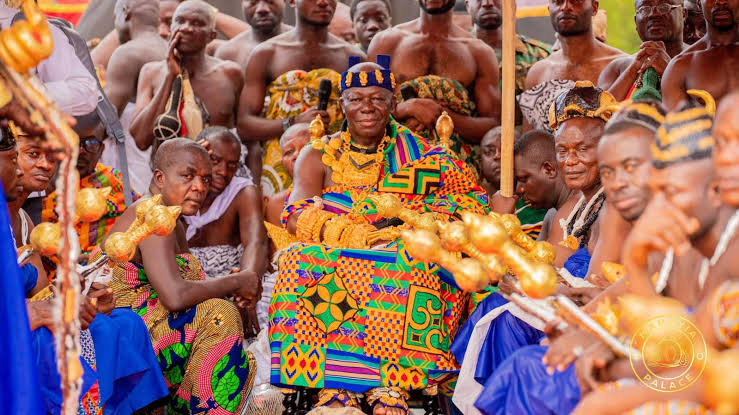

Ghana has a strong and diverse Cultural Heritage. From the Kingdom Of The Ashantis To The Ewe people to The Gonjas. We share a common Value That is Love, Peace and togetherness.

The akan tribe is the largest tribe in Ghana consisting of the Asantes, Akuapems and the Krobos. Originating from the old Ghana Empire, The Akans share a very interesting cultural heritage. A unique and beautiful dressing style called Kente. The language of the Akans is twi which is also an official laguage of the country. The AKan people have a unique history and food. Their festivals include the great Adae kese, popularly celebrated by the Asantes and the Odwira festival which is also popularly celebrayed by the Akuapems.
The Ewe tribe is also another beautiful tribe with diverse cultural heritage originating from the Western Togoland. They are best known for their hardworking men and beautiful women. The Ewe people celebrate the Hobgetsotso festival which is celebrated to thank the gods for a bumper harvest. They also have an energetic and popular dabce called Abgagya. The ewe people's most popular indigenious food is Apkle which they would even choose over K.F.C.